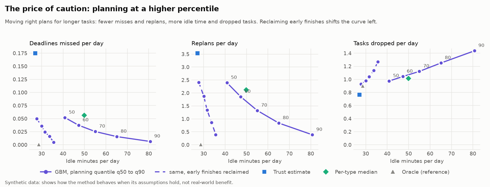

The claimBetter durations make better days, and it costs something
People plan from their own estimates, and those are biased low, so a planner that believes them over-promises. In the simulator, per day, against trusting the user:
The last tile is the honest one. Trusting the user finishes the most tasks by over-committing and then spilling into meetings, working overtime and missing deadlines. ML planning drops about 0.2 more tasks a day up front, with a reason, instead of failing them later. Whether that trade is right depends on what an overrun costs a person, which this study cannot measure.
How I got hereThe idea in seven steps
Each step is a question. The next step exists because the previous one answered it or exposed a weak spot.
- Is the claim even true?People plan from biased estimates, so a planner that believes them should over-promise. Everything is measured against that baseline, "trust the user".
- How do I make the comparison fair?Split the system: a deterministic scheduler with no ML, tested hard, and a swappable estimator that only hands it minutes per task. Then the estimator is the only thing that changes between plans.
- Where does data come from?There is none that is real, so a documented bias model (task type, size, time of day, a personal offset, noise) generates labelled synthetic days. Every estimator sees the same days and the same hidden noise.
- How much of the bias can be learned?Three baselines, then gradient boosting with past-only history features, split by user. Against a noise floor of 11.3 minutes the model scores 11.7 and trusting the user 23.1. The per-type median (14.6) is a strong baseline.
- Does a better number make a better day?Run the scheduler inside the simulator, let tasks take their true duration, replan on overruns. Yes, at the cost above.
- What did that expose?Each weak spot became the next piece of work: idle time led to reclaiming early finishes; that moved about seven start times a day, which led to a minimum-gain threshold; quantiles that fail for new users led to a distribution-shift test; "I only varied my own parameters" led to heavy-tailed and drifting-habit worlds; changing habits led to a drift check.
- Can I trust my own work?I audited it. The validator had silently lost four checks and the baselines took a median on the wrong scale. Both are fixed and disclosed instead of quietly corrected.
MechanicsHow it works
The scheduler only ever sees a number of minutes per task. Swapping the estimator is therefore the whole experiment.
- Scheduler. Admits tasks in priority order, but only if everything admitted so far can still be sequenced with every deadline met (an exact search with a node budget). Anything else is dropped with a reason. Fixed events and finished work never move. It is checked against a brute-force oracle and by injecting nine bugs; eight are caught and the ninth is an equivalent mutant.
- Estimators. Trust the user, one global multiplier, a per-type median, and gradient boosting for the median and the 80th percentile. The planning percentile is a dial: higher means fewer overruns and more dropped tasks.
- Evaluation. Same synthetic days and hidden noise for every estimator, so differences are paired. Intervals come from resampling whole users, because one user's days are correlated.
ResultsWhat the evidence shows
Per simulated day, 100 unseen users over 30 days each, early finishes not reclaimed. Oracle (dashed) knows the true durations and is an unreachable reference.
Show the numbers as a table
| Estimator | Deadlines missed | Replans | Tasks dropped | Min spilling into events | Tasks completed |
|---|---|---|---|---|---|
| Trust the user | 0.17 | 3.54 | 0.77 | 11.2 | 5.28 |
| Global multiplier | 0.11 | 2.16 | 0.95 | 6.6 | 5.09 |
| Per-type median | 0.06 | 2.13 | 1.02 | 3.4 | 5.03 |
| ML (median) | 0.05 | 2.39 | 0.98 | 2.6 | 5.07 |
| ML, cautious (80th pct) | 0.02 | 0.84 | 1.25 | 0.9 | 4.80 |
| Oracle (true durations) | 0.00 | 0.02 | 0.91 | 0.0 | 5.14 |
Confidence intervals, paired differences and the reclaim-early variant are in the full write-up.
- The per-type median is a strong baseline. It is within noise of the model on missed deadlines. The model's clear edge is overtime and per-task accuracy.
- There is no free point on the caution curve. Each step up the planning percentile buys fewer misses and replans and costs more dropped tasks.

Honest limitsWhat this does not prove
The model was told the answer's shape
The generator is log-linear in features the estimator is given. Recovering it shows the pipeline works, not that human durations are this learnable.
The biases are my assumptions
Loosely inspired by the planning-fallacy literature, not measured from anyone.
Calibration breaks under shift
For new users who underestimate more than anyone in training, 80th-percentile coverage is 0.68 in week one. Anchoring on the user's history lifts it only to 0.72, because 14% of first-week tasks have no history. I tried it and did not adopt it.
Robustness is shown for mild departures only
Seeds, noise and bias change the size of the gains, not their direction. Heavy tails and steadily drifting habits do not break it, but both are still log-linear plus noise. Abrupt changes, interdependent tasks and a user who reacts to the planner were not tried.
One day at a time
No experiment evaluates a multi-day horizon, and the scheduler has no task splitting or dependencies.
Caution can leave work out
The cautious plan at the top drops Study. And because tasks cannot be split, a long reservation can leave no gap that fits at all, even for a high-priority task. The planner says so and why; it does not fix it.
VerificationHow I checked my own work
- 193 tests with property-based checks against a brute-force oracle; strict type checking; about 95% line coverage; CI on Python 3.11 to 3.13.
- Reports regenerate byte for byte from a fixed seed.
- Mistakes the checks found are listed, not hidden: the validator that had silently lost four checks, a median taken on the wrong scale, a routine that could be planned a day early.
Try itRun it
You need uv and Python 3.11 or newer.
git clone https://github.com/asim-aa/flowday
cd flowday
make install
make train # synthetic data, tuned models (1 to 3 min)
make app # the Streamlit plannerEnter fixed events and tasks, plan the day, then press "ran over by N minutes" and watch the rest replan. Switch between the baselines and the ML estimators, and slide how cautious the plan should be. Run locally, the app logs your real durations and can retrain on them after 60 measured completions.